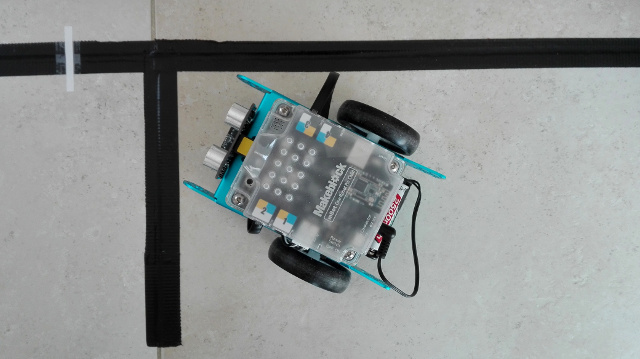

risorse | parcheggio automatico con mbot
È possibile programmare mBot in modo che si parcheggi autonomamente?
L'idea è che quella di predisporre un'area di parcheggio lungo un tracciato che il robot percorre con il programma “insegui la linea”; quando il robot raggiunge il posteggio ci entra e si arresta. L'area di parcheggio è rappresentata un breve tratto di linea guida perpendicolare al tracciato principale:
Un'area di parcheggio
Se il robot si muove lungo la linea guida non ha modo di accorgersi della presenza dell'area di parcheggio. Una breve interruzione della linea principale può tuttavia essere usata per segnalare la presenza del posteggio:
L'interruzione indica la presenza dell'area di parcheggio
La procedura di parcheggio prevede:
Le cinque fasi del parcheggio
Il punto di partenza è il programma dell'inseguitore semplificato discusso in Studio del firmware di mBot, privato della parte relativa alla situazione in cui entrambi i sensori sono fuori dalla linea guida:
Il programma di partenza
È stato scelto di lavorare a velocità ridotta per poter analizzare più facilmente il comportamento del robot e valutare di conseguenza la bontà della strategia in fase di implementazione.
Convenuto che la procedura di parcheggio ha inizio nel momento in cui entrambi i ricettori del sensore di linea indicano l'assenza della linea guida, come si svolge nel dettaglio? Le fasi previste sono le seguenti:
Tenendo conto che la rotazione sul posto si ottiene facendo girare i due motori in senso opposto alla medesima velocità, la procedura di parcheggio diventa:
La procedura di parcheggio iniziale
Come si può notare, il programma utilizza i led per segnalare lo stato in cui si trova:
L'uso delle luci per indicare lo stato nel quale si trova il robot ha permesso di velocizzare lo sviluppo del programma rendendo più semplice l'individuazione e l'eliminazione dei difetti.
Il buon esito della procedura dipende fortemente dalla posizione dell'interruzione rispetto alla linea guida del parcheggio. Posta inizialmente ad una distanza pari alla distanza tra l'interasse del robot e i ricettori del sensore di linea, alcuni esperimenti hanno dimostrato che la posizione ideale è una leggermente arretrata rispetto a questa.
Posizione dell'interruzione rispetto al parcheggio
Posizione del robot al riconoscimento dell'interruzione
Il filmato mostra il programma in azione:
Uno dei primi parcheggi completati con successo
Scarica la versione iniziale del programma del parcheggio.
Ciò che rende la procedura del parcheggio sensibile alla posizione del marcatore è l'ultima fase, ovvero il criterio di arresto una volta che il robot si è posizionato sulla linea guida del parcheggio e sta entrando nell'area di parcheggio: “un ricettore del sensore indica l'assenza della linea guida”.
Parcheggio incompleto: si nota il ricettore destro del sensore di linea, attivo
Una soluzione potrebbe essere quella di percorrere la linea guida del parcheggio secondo la logica dell'inseguitore: in questo modo il robot non si ferma se non quando arriva in fondo, curvando se necessario.
Per non duplicare la sequenza dei blocchi dell'inseguitore semplificato, li si raccoglie in un blocco apposito, denominato «follow black line»:
La definizione del blocco dell'inseguitore semplificato
Anche la procedura di parcheggio può essere posta in un blocco dedicato, denominato «park left», dato che per il momento quello è l'unico lato verso il quale il robot è capace di parcheggiare:
La definizione del blocco del parcheggio a sinistra
Il programma principale diventa ora estremamente compatto e leggibile:
Il programma principale con i nuovi blocchi
Scarica la versione con parcheggio guidato dalla linea del programma.
Per complicare la situazione si possono aggiungere più parcheggi; il robot ora dovrà andare ad occupare quello selezionato dall'utente, per esempio attraverso il telecomando in dotazione.
Un parcheggio con tre stalli
La questione non si complica in realtà di molto: se adesso il robot parcheggia in corrispondenza del primo marcatore, dopo non dovrà fare altro che contare le interruzioni che incontra nel suo cammino e parcheggiare nello stallo giusto. Per questo si introduce una variabile denominata «target area», che contiene il numero del parcheggio selezionato dall'utente. Ogniqualvolta incontra un'interruzione sulla linea guida il robot decrementerà la variabile, parcheggiando solo quando la variabile raggiungerà il valore zero:

Il programma con il conteggio delle interruzioni
L'unica particolarità del programma sta forse nel ciclo iniziale di attesa della selezione dello stallo dove il robot dovrà parcheggiare. La variabile «target area» viene inizialmente azzerata, quindi si entra in un ciclo dal quale si esce solo quando questa ha assunto un valore strettamente positivo, cosa che succede solo quando l'utente preme uno dei primi tre tasti del telecomando.
Il filmato mostra un parcheggio in terza posizione:
Esempio di parcheggio con selezione dello stallo da telecomando
Scarica la versione con parcheggio telecomandato del programma.
Si può estendere il programma facendo in modo che il robot controlli che il posteggio sia libero prima di occuparlo. Nel caso lo stallo risulti già in uso, il robot effettuerà un arresto di emergenza facendo lampeggiare le luci rosse ed emettendo un breve segnale sonoro:
La procedura di arresto di emergenza
La procedura di parcheggio va estesa aggiungendo il controllo circa la disponibilità del posto. Si ricorre quindi al sensore ultrasonico per verificare che non ci siano oggetti presenti di fronte al robot (il valore preciso dipende dalla lunghezza della linea guida del parcheggio):
La procedura parcheggio con il controllo di presenza
La medesima procedura d'arresto può essere utilizzata nel caso il robot perda la linea — allo stato attuale è sufficiente richiedere al robot di parcheggiare quando già si trova in uno stallo. Si può quindi attivare l'arresto forzato se il robot resta fuori dalla linea per troppo tempo, per esempio un secondo:
L'arresto di emergenza in caso di linea guida persa
Il filmato mostra l'arresto forzato a causa della presenza di un oggetto estraneo nello stallo di destinazione:
Parcheggio fallito per stallo già occupato, in seconda posizione
Scarica la versione con arresto di emergenza del programma.
Al solito, al raggiungimento di un risultato all'apparenza soddisfacente è bene chiedersi se il programma rappresenta a tutti gli effetti una soluzione accettabile o se presenta dei difetti nascosti che andrebbero sistemati. Quali sono le debolezze dell'algoritmo sviluppato? In quali condizioni il robot risponde in modo errato? In quali condizioni in modo inaspettatamente virtuoso?
Tra le innumerevoli possibilità di estensione:
Pagina modificata il 07/05/2018